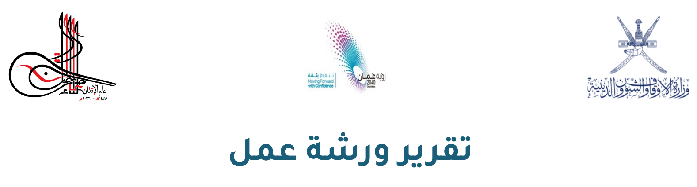
ورشة إعداد الخطط التفصيلية لبرامج ومشاريع الخطة السنوية 2026م، حيث تهدف إلى تزويد المشاركين بالمهارات والأدوات المنهجية اللازمة لتحويل الأهداف الاستراتيجية للوزارة إلى خطط عمل مفصلة وقابلة للتنفيذ والقياس على المدى القصير إلى المتوسط باستخدام معيار SMART.
تركز الورشة على الجانب العملي والتطبيقي، لضمان قدرة المشاركين على الخروج بخطط محددة وواقعية تضمن الاستخدام الأمثل للموارد وتحقيق الأهداف المرجوة ضمن إطار زمني واضح.
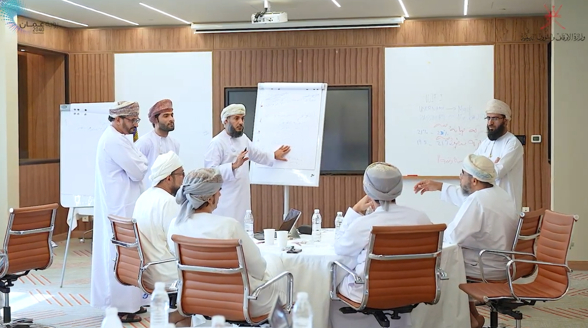
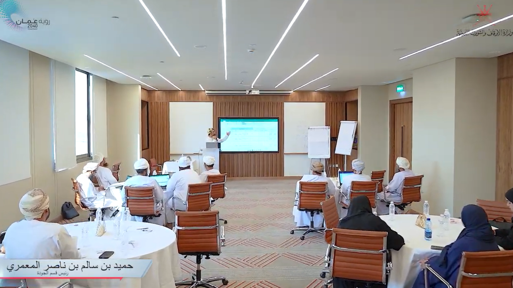
| الاسم | الوظيفة / الجهة |
|---|---|
| الفاضل/ أحمد بن محمد بن عبد الله العوفي | مدير دائرة التخطيط والإحصاء |
| الفاضل/ حمدان بن راشد الخاطري | المدير المساعد بدائرة التخطيط والإحصاء |
| الفاضل / مسعود بن سعيد بن علي المعولي | رئيس قسم التخطيط و الدراسات بدائرة التخطيط و الإحصاء |
| الفاضل / حميد بن سالم بن ناصر المعمري | رئيس قسم الجودة بدائرة التخطيط و الإحصاء |
| الفاضل / ابراهيم بن عبدالله البيماني | رئيس قسم الإحصاء بدائرة التخطيط و الإحصاء |
| الفاضل / جمال بن جابر بن خالد الهنائي | دائرة التخطيط و الإحصاء |
| الفاضلة/ إيمان بنت سعيد الهدابية | اخصائية تخطيط بدائرة التخطيط و الإحصاء |
| الفاضلة / رحاب بنت علي بن حمد الوهيبية | كاتبة شؤون مالية بدائرة التدقيق الداخلي |
| الفاضلة / انتصار بن مبارك عبدالله الضامرية | باحثة شؤون إدارية بدائرة التدقيق الداخلي |
| الفاضل / مصطفى بن محمد العلوي | مدير مختص بالمديرية العامة للتخطيط والدراسات |
| الفاضل / إبراهيم بن حمد العزري | محلل نظم بمكتب الإفتاء |
| الفاضل / هلال بن ناصر بن علي القصابي | المدير المساعد بدائرة الأوقاف بيت المال |
| الفاضل / إدريس بن ناصر المعمري | رئيس قسم تنمية الأصول والاملاك بدائرة اموال الايتام والقصر |
| الفاضل / ناصر بن سعيد بن ناصر المسكري | مهندس مدني بدائرة المنشات والصيانة |
| الفاضل/ عدي بن سعيد بن سيف المعولي | المدير المساعد بدائرة الأوقاف وبيت المال لشؤون الأوقاف وبيت المال |
| الفاضل/ الأشرف بن منصور بن علي الهنائي | رئيس قسم الأصول والأملاك بدائرة إعمار المساجد ومدارس القرآن الكريم |
| الفاضل/ احمد بن سعيد بن محمد العامري | باحث شؤون اسلاميه بمكتب الوكيل |
| الفاضل/ أحمد بن سالم بن سويد البكاري | مدير دائرة القرآن الكريم |
| الفاضل/ أحمد بن راشد بن هاشل الذيابي | رئيس قسم استراتيجيات تعليم القرآن الكريم |
| الفاضل/ سلطان بن جمعة بن سالم الوهيبي | رئيس قسم البرامج القرآنية التفاعلية |
| الفاضل/ يوسف بن سالم بن ناصر المحروقي | رئيس قسم الأداء المؤسسي بدائرة الحوكمة |
| الفاضلة / شيخة بنت سعيد بن مسلم المحروقية | رئيسة قسم تعليم القرآن الكريم |
| الفاضل/ خالد بن جمعه بن سالم الصلتي | مشرف إداري بدائرة التعريف بالإسلام والتبادل الثقافي بمكتب الإفتاء |
| الفاضل/ إبراهيم بن حمد بن سيف العزري | رئيس قسم التقويم والتطوير بمكتب الإفتاء |
| الفاضل/ قبس بن هلال بن أحمد البهلاني | المدير المساعد بدائرة الزكاة |
| الفاضلة/ كاملة بنت ناصر بن خلفان الحديدية | باحثة شؤون إدارية بدائرة التعليم والإرشاد النسوي |
| الفاضلة/ إبتهال بنت حارب بن سعيد الشكيلية | رئيسة قسم الوعظ والإرشاد بدائرة التعليم والإرشاد النسوي |
| الفاضل/ إسماعيل بن سلمان بن محمد الرواحي | رئيس قسم الخطب بدائرة البحوث الشرعية |
| الفاضل/ أحمد بن خميس بن سالم العلوي | مدقق لغوي بدائرة البحوث الشرعية |
| الفاضل/ جميل بن سليمان بن سالم الناعبي | رئيس قسم الوعظ والإرشاد بدائرة الشؤون الأسلامية |
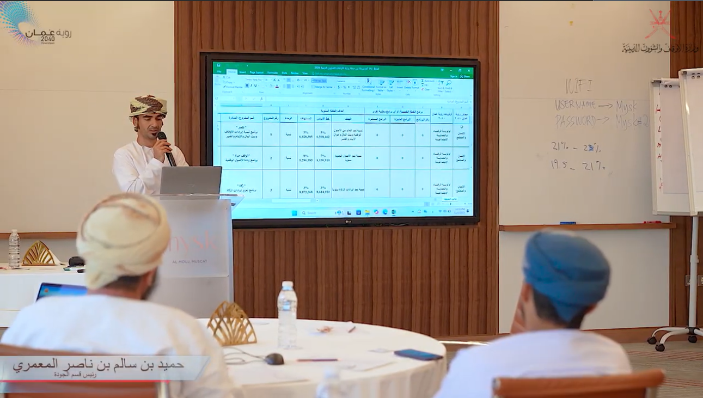
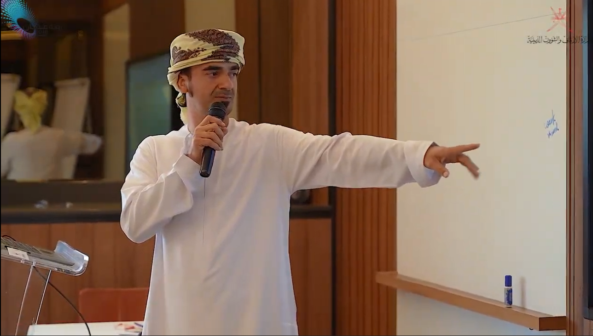
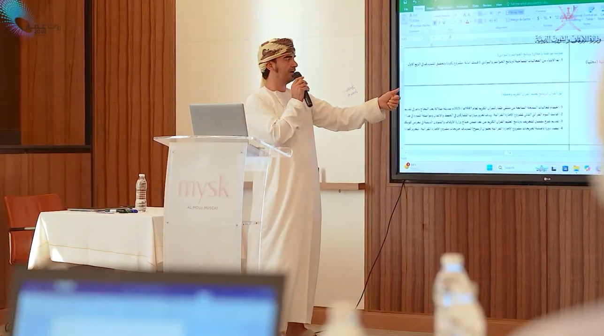
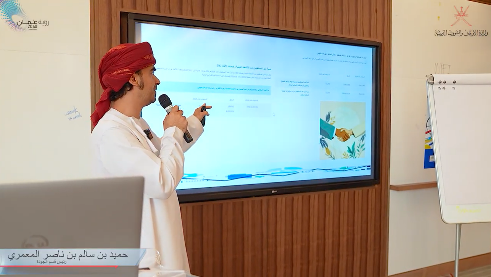
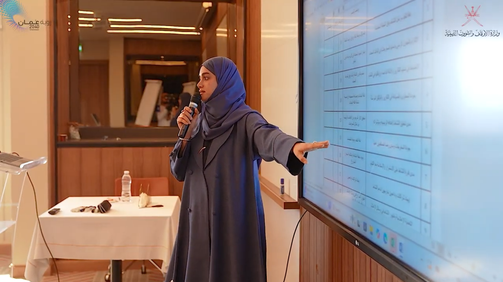
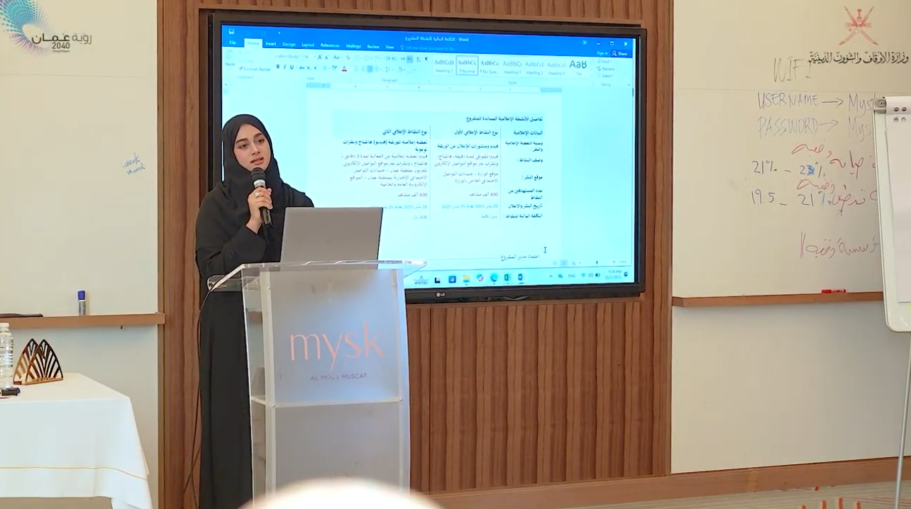
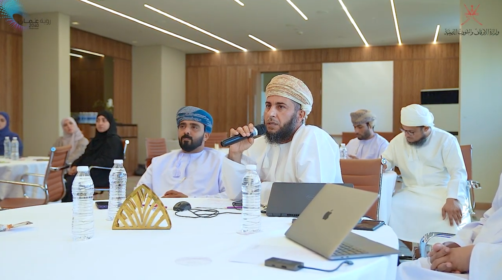
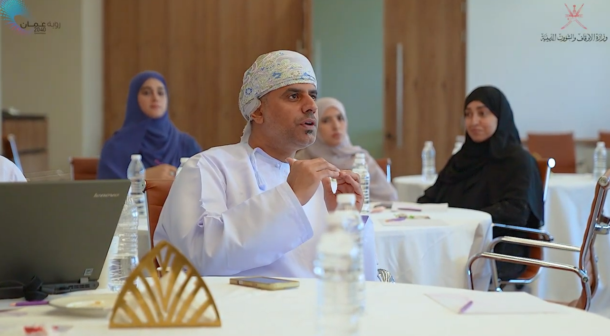
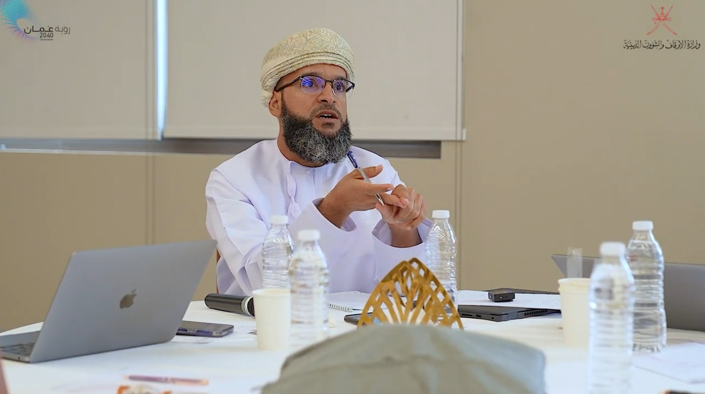
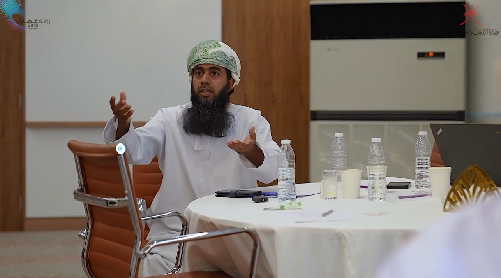
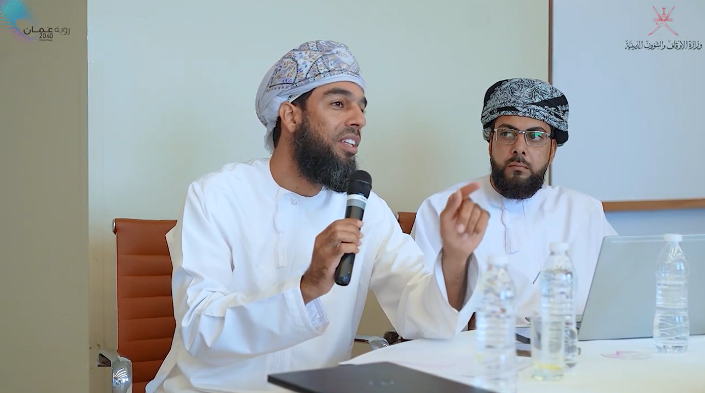
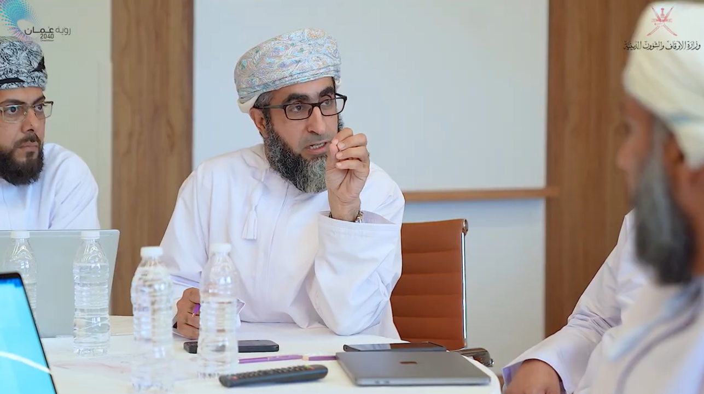
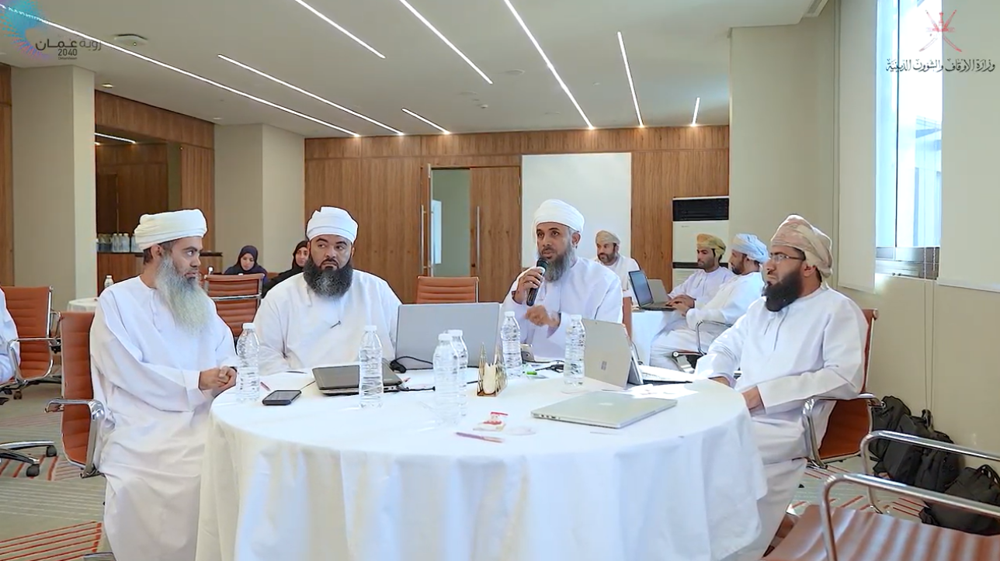
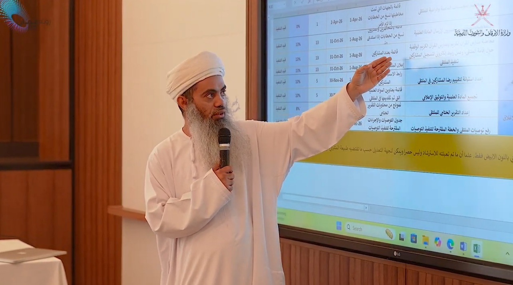
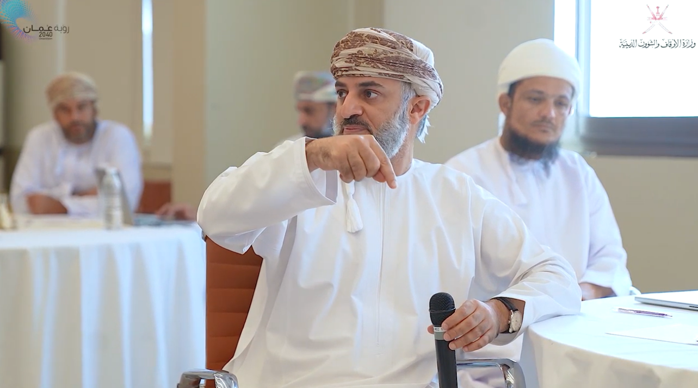
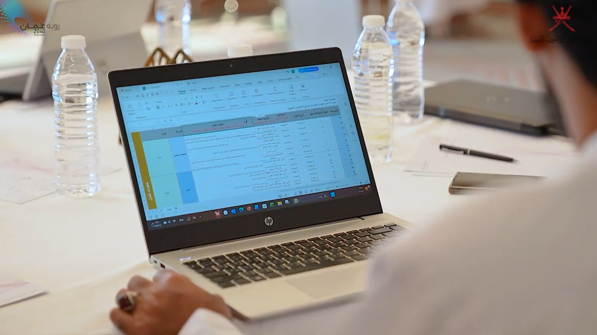
لم يشارك الفريق في الورشة الخاصة بهذا البرنامج.
مسعود بن سعيد بن علي المعولي
معالي الوزير الموقر